About
What if furniture was interface?
 This was our guiding question for this project. Furniture is such a central part of our space and routine. Through this project we wanted to explore and design what might go into an interactive wardrobe.We chose a wardrobe becuase it is a central part of one's morning routine and is something that you interact with differently everyday, based on what you have to wear and where you are going. Usually the interface you use to make these decisions are done on your phone; checking calendar and weather to determine your outfit. Not to mention when you first wake up to a blarring phone alarm that you snooze.
We decided to put this part of your morning routine, waking up and picking your outfit, into this interactive wardrobe. This wardrobe is meant to be an assitive pressence. And yes, a little smart.
Below is a short demo video of our prototype explaining some of its features.